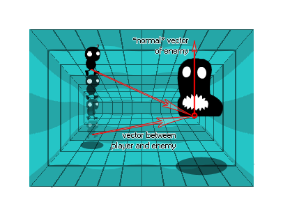

Sintaxis:
dot_product_3d(x1, y1, z1, x2, y2, z2)
| Argumento | Descripción |
|---|---|
| x1 | La coordenada x del primer vector. |
| y1 | La coordenada y del primer vector. |
| z1 | La coordenada z del primer vector. |
| x2 | La coordenada x del segundo vector. |
| y2 | La coordenada y del segundo vector. |
| z2 | La coordenada z del segundo vector. |
Devoluciones: Real
Descripción
El producto punto es un valor que expresa la relación angular entre dos vectores y se encuentra tomando dos vectores, multiplicándolos y luego sumando los resultados. El nombre "producto punto" se deriva del punto centrado "·" que se utiliza a menudo para designar esta operación (el nombre alternativo "producto escalar" hace hincapié en la naturaleza escalar en lugar de vector del resultado).
La fórmula matemática real se puede escribir así: 
En 2D, el producto escalar de los vectores a [x1, y1] yb [x2, y2] es x1x2 + y1y2, por lo que en 3D, el producto escalar de los vectores a [x1, y1, z1] yb [x1, y1, z1] es x1x2 + y1y2 + z1z2. Entonces, el dot_product_3d en GameMaker Studio 2 se calcula como:
a · b = (x1*x2) + (y1*y2) + (z1*z2);
Lo curioso del producto escalar es la relación que tiene con el ángulo formado por los vectores de entrada que se puede expresar como:
a · b = (length of a) * (length of b) * cos(angle)
Es decir, el producto escalar de dos vectores será igual al coseno del ángulo entre esos vectores, multiplicado por la longitud de cada uno de ellos. Aquí hay una imagen para ilustrar: 
Hay algunas cosas que ahora podemos establecer a partir de dos vectores en relación con el resultado de su producto escalar:
- Si a y b son perpendiculares (a 90 grados entre sí), el resultado del producto escalar será cero, porque cos (ang) será cero
- Si el ángulo entre a y b es menor a 90 grados, el producto de puntos será positivo (mayor que cero), ya que cos (ang) será positivo
- Si el ángulo entre a y b es mayor que 90 grados, el producto de puntos será negativo (menor que cero), ya que cos (ang) será negativo
Entonces, ¿qué significa esto para aquellos de nosotros que hacemos juegos? Bueno, esta relación matemática puede usarse en bastantes circunstancias, pero la mejor manera de verla es construir un escenario real y ver por ti mismo lo que está sucediendo. Una de las formas más sencillas de hacerlo es generar un simple control de "altura" para un enemigo en, por ejemplo, un juego de plataforma para que el enemigo "vea" al jugador si está por encima del plano formado por el vector normal enemigo y el piso 3d.

Básicamente, estamos obteniendo el vector normal del enemigo perpendicular al suelo y luego estamos obteniendo el vector del jugador para el enemigo. Obtendremos el dot_product de estos vectores, y si el resultado es positivo, el jugador está "por encima" del plano del piso enemigo y si es negativo, está abajo. El código actual para obtener este funcionamiento se proporciona en el ejemplo a continuación.
Ejemplo:
var x1, y1, x2, y2;
x1 = 0;
y1 = 1;
z1 = 0;
x2 = o_Player.x - x;
y2 = o_Player.y - y;
z2 = o_Player.z - z; if dot_product_3d(x1, y1, z1, x2, y2, z2) >
0 above=true else above=false;
El código anterior crea un vector normal a lo largo del eje instancias y (arriba), y luego obtiene el vector del objeto jugador "o_Player" para sí mismo. Finalmente calcula el producto escalar de estos dos vectores y si es mayor a 0, establece la variable "arriba" en verdadero, y si es menor o igual que 0 lo establece en "falso".